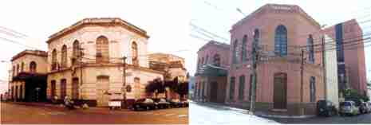

Built in 1843, this large mansion initially housed the session room of the National Congress, at that time the main access was on Avenida El Paraguayo Independiente.
The sessions then move to the Cabildo building, then, President Carlos Antonio López, requests the playwright Ildefonso Antonio Bermejo, the opening of a theater. He himself elaborated a project and built the building, which, once completed, would be the headquarters of the theater in 1855. Since then, it was the center of culture in terms of theater and music for the Asuncions.
During the War against the Triple Alliance, the theater continued to function to the best of its ability. In 1886, the municipal authorities accepted the proposal of Mr. Baudilio Alló, a businessman of Catalan origin, who obtained the concession for the theater and Plaza Libertad to erect a new building there, thus the construction of the National Theater began, culminating in the year 1889.
In 1894, the work of Alló, which was the extension of the work of Ildefonso A. Bermejo, was left in the hands of society, boxes were introduced and the patios were beautified. In 1939, it became the domain of the municipality of Asunción and became the Municipal Theater.
During the first half of the 20th century there was no building in Asunción dedicated to culture with the glories of the Municipal Theater. Between the years 1940 and 1960, the stage of the Municipal Theater brought together most of the theatrical performances in Paraguay. It was already known as Ignacio A. Pane Theater. In the year 1995 it was closed for repairs and restorations, which began in the year 1997. The works continued until the works were completed in their entirety, and thus in the year 2006, the "Ignacio A. Pane" theater was officially enabled. for its use and recovered the brightness of its former glories with a building renovation that today is the pride of the city and with programming that pleases the general public.
Although the building maintained its essential characteristics, it is possible to observe the complementation of the old construction with the new extensions that comprise the building that overlooks El Paraguayo Independiente Avenue, corner of Nuestra Señora de la Asunción.
Thanks to the fact that Asunción has its open theater, artists and musicians on tour, arrive and contribute significantly to the formation of the taste of the demanding Paraguayan public. The Municipal Theater has always been in the memory of the Paraguayan, for the artistic and political manifestations.